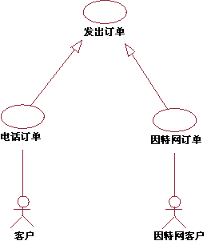
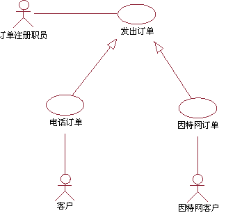
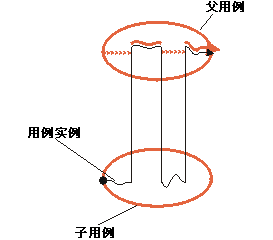
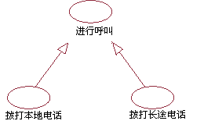

| 指南：用例泛化关系 |
 |
|
说明父用例可以专门化化形成一个或多个子用例，这些子用例代表了父用例比较特殊的形式。 虽然多数情况下父用例是抽象的，但无论父用例或子用例都不一定是抽象的。子用例继承父用例的所有结构、行为和关系。同一个父用例的子用例是该父用例的所有专门情况。这就是适用于用例的泛化关系（关于应用于类的泛化关系概念的更多信息，请参阅指南：泛化关系）。 当发现有两个或多个用例在行为、结构和用途方面有共同点时，则使用泛化关系。 在这种情况下，可以在新的、通常抽象的用例中描述共享部分，然后该用例将专门化为子用例。 示例：  用例“电话订单”和“因特网订单”是抽象用例“下订单”的具体情况。 在订单管理系统中，用例“电话订单”和“因特网订单”在结构和行为方面有许多共同点。 通用用例“下订单”是在定义结构和通用行为的情况下定义的。抽象用例“下订单”本身不必完整，但它提供了可由子用例完成的通用行为框架。 父用例并不总是抽象的。 示例： 请考虑前述示例中的订单管理系统。说明：我们希望添加“订单注册职员”参与者，该参与者可以代表客户将订单输入系统。该参与者将发起通用的“下订单”用例，该用例现在必须具有所描述的完整事件流。子用例可以向父用例提供的结构添加行为，也可以修改父用例中的行为。  参与者“订单注册职员”可以使通用用例“下订单”实例化。用例“下订单”也可专门化为用例“电话订单”或“因特网订单”。 子用例依赖于父用例的结构（请参阅指南：用例中关于事件流结构的讨论）。子用例可以通过将行为分段插入继承而来的行为中或通过声明子用例的包含关系和扩展关系，向父用例添加附加的行为。子用例可以修改从父用例处继承而来的行为分段（尽管修改时要小心，以保留父用例的意图）。子用例保留父用例的结构。这意味着描述为父用例事件流的步骤或子流的所有行为分段仍必须存在，但这些行为分段的内容可由子用例修改。 如果父用例是抽象用例，则它可能具有不完整的行为分段。这样，子用例就必须完成那些行为分段并使它们对参与者有意义。 如果父用例是抽象用例，则不需要与参与者有关系。 如果两个子用例对同一个父用例（或基本用例）专门化，且专门化是相互独立的，则表示这两个子用例是在单独的用例实例中执行的。这不像扩展关系或包含关系，在这两种关系中多个补充子用例显式或隐式地修改一个执行同一基本用例的用例实例。 用例泛化关系和包含关系都可用于模型中用例之间的行为重用。区别在于，对于用例泛化关系，子用例的执行取决于父用例（重用部分）的结构和行为，而在包含关系中，基本用例的执行只取决于包含用例（重用部分）所执行的功能的结果。另一区别在于，在泛化关系中，子用例的用途和结构是相似的，而在包含关系中，重用同一个包含用例的基本用例可能有完全不同的用途，但需要执行相同的功能。 执行用例泛化关系执行子用例的用例实例将遵循父用例的事件流，同时插入其他行为或修改在子用例事件流中定义的行为。  用例实例遵循父用例，按子用例中所述的那样插入或修改行为。 描述用例泛化关系在通常情况下，不描述泛化关系本身。相反，在子用例的事件流中，您将指定如何将新的步骤插入继承而来的行为中以及如何修改继承而来的行为。 如果子用例是要专门化多个父用例（多重继承），则必须在子用例规范中显式声明父用例的行为顺序是如何在子用例中交错的。 使用示例对于简单电话系统的用例，考虑以下分步概述： 发出本地呼叫
发出长途呼叫
两个用例中的蓝色文本十分相似。如果两个用例如此相似，则应考虑将它们合并为一个用例，其中备用子流显示本地呼叫与长途呼叫之间的区别。 但如果两者之间的区别相当重要，并且有一个值在用例模型中明确显示本地呼叫与长途呼叫之间的关系，则可以将共同的行为提取到一个新的、更通用的用例“发出呼叫”中。 在用例图中，已创建的泛化关系将作如下说明：  用例“发出本地呼叫”和“发出长途呼叫”是从抽象用例“发出呼叫”继承而来的。 |
© Copyright IBM Corp. 1987, 2006. All Rights Reserved. |